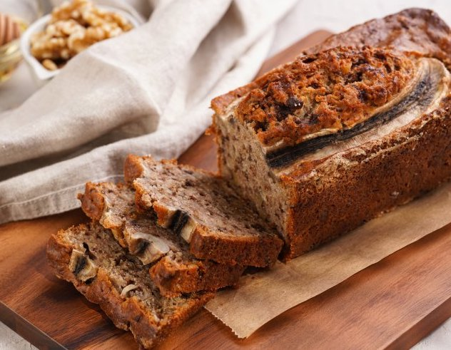

Взбити аквафабу з цукром, дадати м'якіть банана. Знову взбити та додати сухі інгридієнти. Перемішати та додати горіхи. Випікати при 180 г. 40-60 хвилин.
- банан 150 г
- аквафаба 2 ст. л.
- мука 110 г.
- цукор
Взбити аквафабу з цукром, дадати м'якіть банана. Знову взбити та додати сухі інгридієнти. Перемішати та додати горіхи. Випікати при 180 г. 40-60 хвилин.